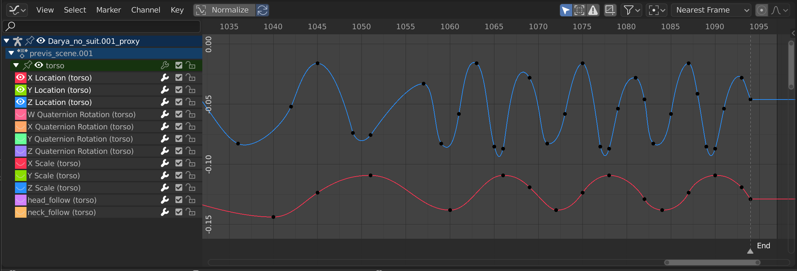
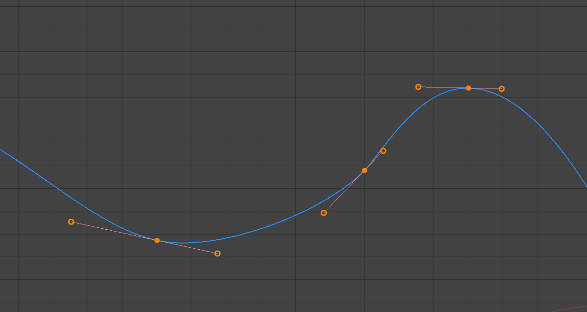
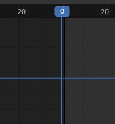
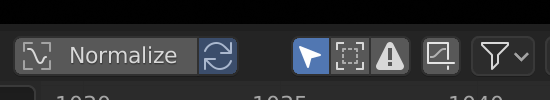
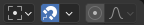

Giới thiệu¶
Graph Editor cho phép bạn chỉnh sửa các đường cong animation, vốn quyết định cách các thuộc tính thay đổi theo thời gian.

Graph Editor.¶
Main Region¶
Khung nhìn đường cong cho phép bạn xem và chỉnh sửa F-Curve. Một F-Curve có vài phần chính:
- Curve
Đường cong mô tả giá trị của một thuộc tính (trục Y) biến đổi theo thời gian (trục X) như thế nào.
- Keyframe
Keyframe là các giá trị do người dùng xác định tại những frame nhất định, được biểu diễn bằng các đĩa nhỏ màu đen chuyển sang màu cam khi được chọn. Giá trị tại các frame khác được tính tự động bằng cách nội suy giữa các keyframe này.
- Handle
Mỗi keyframe có hai handle -- là các điểm có thể kéo qua lại để ảnh hưởng đến hình dạng đường cong xung quanh nó.

Một đường cong đơn giản. Các đĩa là keyframe, còn các vòng tròn là handle của chúng.¶
Xem thêm
Xem F-Curve để biết thêm thông tin.
Playhead & 2D Cursor¶

2D Cursor của Graph Editor.¶
Frame hiện tại được biểu diễn bằng một đường dọc màu xanh lam gọi là Playhead. Giống như các Các Animation Editor khác, bạn có thể di chuyển nó bằng cách nhấp hoặc kéo bằng LMB trong vùng tua ở phía trên.
Kết hợp với đường ngang màu xanh lam, Playhead tạo thành 2D Cursor có thể được dùng làm pivot point cho việc xoay và scale. Bạn có thể tắt đường ngang này bằng hoặc .
2D Cursor có thể được di chuyển bằng cách nhấp hoặc kéo với Shift-RMB, hoặc bằng cách điều chỉnh tọa độ của nó trong tab View của Sidebar.
Header¶
Normalize¶
Scale cách hiển thị của từng đường cong sao cho tất cả (trông như) chiếm cùng một khoảng giá trị, chạy từ -1 đến 1. Điều này có thể giúp việc chỉnh sửa dễ dàng hơn khi bạn làm việc với các đường cong có khoảng giá trị cách xa nhau.
Khi bạn bật tùy chọn này, khung nhìn được thu phóng tương ứng và vùng nằm ngoài khoảng giá trị đã chuẩn hóa bị làm tối.
Nếu một khoảng xem trước đã được xác định, các keyframe trong khoảng sẽ được chuẩn hóa, còn những keyframe khác được scale theo tỷ lệ.
Auto Normalization¶
Tự động tính lại phép chuẩn hóa đường cong sau mỗi lần chỉnh sửa đường cong.
Điều khiển khung nhìn¶

Các điều khiển khung nhìn.¶
- Show Only Selected
Chỉ hiển thị đường cong thuộc về object/bone/... đang được chọn.
- Show Hidden
Hiển thị keyframe từ các object/bone/... đang bị ẩn.
- Show Only Errors
Chỉ hiển thị các channel có lỗi (ví dụ vì chúng cố animate một thuộc tính không tồn tại trên object).
- Create Ghost Curves (biểu tượng F-Curve có khung)
Tạo một bản chụp của các đường cong hiện tại và hiển thị nó ở nền sau để bạn có thể dùng làm tham chiếu. Nhấp nút lần nữa để xóa bản chụp.
- Filter (biểu tượng phễu)
- Search
Lọc danh sách channel theo từ khóa.
- Filtering Collection
Chọn một collection để chỉ hiển thị keyframe từ các object trong collection đó.
- Filter by Type
Lọc curve theo loại thuộc tính.
- Sort Data-Blocks
Sắp xếp data-block theo thứ tự bảng chữ cái để dễ tìm hơn.
Nếu tốc độ phát lại bị ảnh hưởng vì điều này (thực tế chỉ là vấn đề khi làm việc với rất nhiều object), bạn có thể tắt nó đi.
Điều khiển biến đổi¶

Các điều khiển biến đổi.¶
- Pivot Point
Pivot point dùng cho việc xoay và scale.
- Bounding Box Center
Tâm của hộp nhỏ nhất có thể bao quanh các keyframe được chọn.
- 2D Cursor
Giao điểm giữa Playhead và đường ngang của Cursor.
- Individual Centers
Xoay/scale từng handle quanh keyframe của nó.
- Snap
Biểu tượng này bật/tắt snapping. Danh sách thả xuống cung cấp các tùy chọn sau:
- Snap To
Loại phần tử để snap tới.
- Frame:
Snap theo frame nguyên.
- Second:
Snap theo giây.
- Nearest Marker:
Snap tới Marker gần nhất.
- Absolute Time Snap
Khi tắt, keyframe sẽ di chuyển theo từng bước bằng Snap To. Ví dụ, nếu bạn chọn Second và có một keyframe hiện đang ở 0:06+5, kéo nó sang phải sẽ snap nó đến 0:07+5. Thời điểm của nó tăng thêm một giây, còn độ lệch dưới giây là 5 frame vẫn giữ nguyên.
Khi bật, keyframe sẽ snap tới các bội số của Snap To. Lấy ví dụ trên, keyframe sẽ snap đến 0:07+0, loại bỏ phần độ lệch dưới giây.
- Proportional Editing O
Xem Proportional Editing.
Playback Controls¶
Vùng Playback Controls chứa các điều khiển và tùy chọn liên quan đến phát lại, keying, auto keyframing và transport.
Những cài đặt này cho phép bạn:
Điều khiển cách xem trước animation và đồng bộ với âm thanh.
Chèn và quản lý keyframe thông qua keying set và auto keying.
Di chuyển trong timeline bằng các điều khiển phát lại và transport.
Điều chỉnh khoảng frame và xem trước những đoạn animation cụ thể.
Xem thêm
Để có mô tả chi tiết về mọi thuộc tính và điều khiển thường thấy ở footer, xem tài liệu Playback Controls.